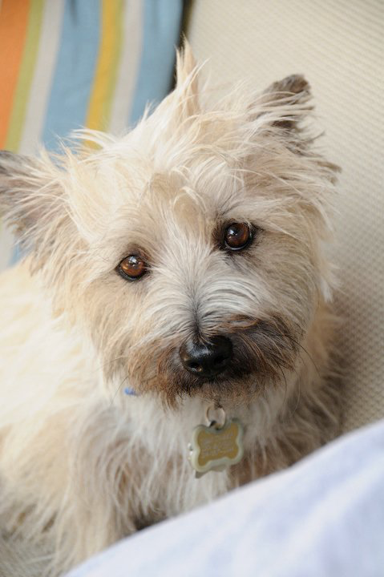
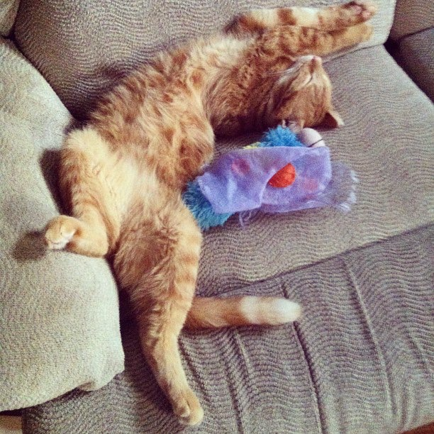

Theodore "Teddy" Deladog
AKA
09/07/2006 - 08/17/2017

I found Teddy on Craigslist in the summer of 2007. Getting ready to start my Sophmore year of my undergraduate degree I desperately needed a companion. He came to me matted, desperately needing a groom, and completely unsocialized. Terrified of life, both of us grew into adulthood together, gaining self confidence through our love for each other. We spent the next 8 years moving every few months, sometimes staying with friends or living in our car, but we always had each other. He was my constant. Although he was timid and reserved normally, he came alive in the woods. With him I found my love of hiking and being outdoors, regularly taking him on 15 mile hikes, surprising our friends with his ability to spend an entire day traversing the foothills of Missouri, never going more than 30 ft ahead before turning back to check on me.
In May of 2012 my partner was approached by a young, overly friendly, male, orange street cat walking to my house and brought it over. Loki and Teddy were perfectly content living parallel lives in the same home. In 2015 I bought a house and was excited for us all to have a reliable home we could get comfortable in. To Ted’s delight, I built a garden just for him to dig in! We were all comfortable and happy. In early 2016 my partner and I got a blue heeler mix puppy, Franklin, and Teddy’s comfortable life was turned upside down. July of 2017 Teddy got really sick and I was lucky enough to stay home and care for him those last few difficult weeks. He passed away August 17, 2017 in my arms. I miss him tremendously and think about him every day.
Loki
aka
Born 05/2011, age 9

Loki harassed my partner, Galen, during a late evening walk to my apartment to let out Teddy while I was at work. Galen brought him to my place and put him in my bathroom. He was neutered by a trap and release group as a kitten and realized he didn’t like the street life. This cat has so much personality that even Galen, who is very much not-a-cat-person loves him. Early on he fell in love with a stuffed butterfly, Beatrice. Although she is long gone, his love for stuffed and soft things has carried on. He can often be found yeowling and dragging around his stuffed bunny girlfriend by his mouth. Obsessed with bathrooms, perhaps due to his brief stint living in mine, he accompanies everyone when they do their business, meowing for the tub faucet to be turned on just slightly so he can get a drink. Then he likes to watch the toilet bowl while you flush. He’s fascinated with the toilet. During showers he sits between the shower curtains and playfully attacks, or joins you in the tub safely covered with the waterproof liner.
Franklin
aka
Born 12/22/2015, age 5

In January 2016, while employed at a pet supply shop, a coworker, knowing my partner and I were looking for a cattle dog puppy called to tell me a customer was there with two tiny heeler mix foster puppies not yet old enough to be vaccinated and put on the ground. I fell in love with the red one, Mitch, but he’d already been claimed by someone else for adoption. My partner and I filled out an application and met the other siblings who weren’t yet adopted. Even at 7 weeks old, Franklin (then named Marco) was playful, attentive, and extremely affectionate. He’s still all of these things. Like me, he’s full of emotion and gets overwhelmed by sensory input easily.
Barack
aka
Born 05/2015, age 6

When I worked at the pet supply shop we always had a few foster cats who lived in the store. This little jerk was one of those cats. The rescue picked him up when I wasn’t working and took him for the weekend to adoption events. When I showed up to work the next day and he was gone my heart dropped. I thought I’d never see him again. When he was brought back the next week I was so relieved and told the woman who ran the rescue I wanted to adopt him.
Eleanor
aka
Born 10/2016, 5 years old

After Teddy passed a friend and I were sending dogs from Petfinder to each other. She sent a puppy named Byte in Tennessee who was pretty cute and at the end of their set of photos was one of his mother, who had no listing of her own. I saved the puppy’s listing to check back later. A couple weeks later, on Teddy’s birthday, I was sad and missing Ted so I checked up on my saved dogs, looked on the rescue in Tennessee’s page and the mother, then named Cookie, had been listed that day! I immediately filled out an application and received a response within an hour. Apparently she was found as a stray with her three puppies, three orange kittens she’d adopted, and another female terrier that could’ve been her sibling. I was off work the next day so we made plans to meet the following afternoon at a dog park. I woke up early and drove over 5 hours to Lebanon, Tennessee right outside of Nashville. This dog was wild and sweet and absolutely gorgeous. I signed the papers and brought her home that day.
Edith / Momma
aka
Born 2014, 7 years old

The day I brought Barack home the rescue dropped off Momma cat. Then started a love affair between my brother and this cat. Every shift of his at the store he spent his free time trying to socialize this skittish cat. We both learned a lot about feline behavior, but he put in the leg work and she’s blossomed into this weird sweet housecoat. When we closed the store we brought her home and she fit right in.